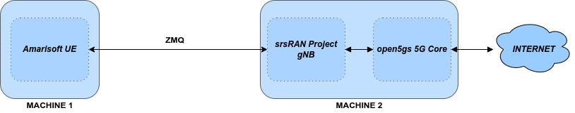

srsRAN gNB 与 Amarisoft UE
概述
Amarisoft UE 模拟器 (AmariUE) 是一款商业软件无线电解决方案，支持模拟多达 1000 个 UE 设备。 本教程概述了如何使用 AmariUE 来测试和练习 srsRAN gNB。在本例中，我们将使用open5GS核心网络来完成端到端的5G网络。 通常，gNB 和 UE 使用物理无线电进行无线传输相互连接。但是，srsRAN gNB 还包括对虚拟无线电的支持，这 使用 ZeroMQ 网络库在应用程序之间传输无线电样本。这种方法对于开发、测试、调试、CI/CD 或教学和演示非常有用。
本教程详细介绍了两个示例设置：使用虚拟无线电 (ZMQ) 将 srsRAN gNB 连接到 AmariUE，以及使用物理无线电 (USRP B210)。
硬件和软件概述
本应用笔记使用以下硬件和软件：
装有 Ubuntu 22.04.2 的电脑
Amarisoft UE (2021年9月18日或之后)
两台 Ettus Research USRP B210 （通过 USB3 连接）
注意事项
理想情况下，USRP 将连接到 10 MHz 外部参考时钟或 GPSDO，但这不是严格要求。我们推荐 利奥·博德纳尔 GPSDO.
Amarisoft UE
Amarisoft UE 模拟器 (AmariUE) 是一款商业解决方案，支持 5G 网络的功能和性能测试。 作为符合 3GPP 标准的 LTE、NB-IOT 和 NR UE，它可以模拟数百个共享相同频谱的 UE。欲了解更多信息，请访问 阿玛瑞软件网站.
Open5GS
在本示例中，我们使用 Open5GS 作为 5G 内核。
Open5GS 是 5G 核心和 EPC 的 C 语言开源实现。以下链接将为您提供 包含下载和设置 Open5GS 所需的信息，以便可以与 srsRAN 4G 一起使用：
注意事项
本教程假设 5G 核心网络与运行 Amarisoft UE 的计算机运行在不同的计算机上。
安装
零MQ
要安装 ZMQ 并构建 srsRAN Project 以使其被识别，请参阅 安装指南.
Amarisoft UE
下载适当版本的 Amarisoft UE 并按照其安装指南中提供的步骤进行安装。
本教程使用 Amarisoft UE 版本 2023-02-06，但也可以是 2021-09-18 以上的任何版本。
适用于 Amarisoft UE 的 ZeroMQ 驱动程序
注意事项
这些步骤只需完成 之后 如上所述编译 srsRAN Project，因为它们需要 srsRAN Project 和 Amarisoft UHD RF 前端驱动程序的构建文件。
Amarisoft UE 与 srsRAN Project 的接口需要由 SRS 实现的自定义 TRX 驱动程序，该驱动程序可以在 srsRAN Project 源文件中找到 srsRAN_Project/utils/trx_srsran.
Amarisoft UE 发布文件夹，amarisoft.2023-02-06.tar.gz，应该包含一个名为 trx_uhd-linux-2023-02-06.tar.gz。在继续之前应解压缩发布文件夹和相关子文件。
首先，需要编译驱动程序，通过运行以下命令来完成此操作 srsRAN_项目/构建 :
cmake ../ -DENABLE_EXPORT=TRUE -DENABLE_ZEROMQ=TRUE -DENABLE_TRX_DRIVER=TRUE -DTRX_DRIVER_DIR=<PATH TO trx_uhd-linux-2023-02-06>
make trx_srsran_test
ctest -R trx_srsran_test
确保 CMake 找到该文件 trx_driver.h 在指定的文件夹中。 CMake 应打印以下内容：
-- Found trx_driver.h 在 TRX_驱动程序_目录=/home/user/amarisoft/2021-03-15/trx_uhd-linux-2021-03-15/trx_driver.h
必须为 UE 应用程序完成符号链接才能加载驱动程序。从 Amarisoft UE 构建文件夹中运行以下命令：
ln -s srsRAN_Project/build/utils/trx_srsran/libtrx_srsran.so trx_srsran.so
基于 ZeroMQ 的设置
在本节中，我们将介绍在 gNB 和 AmariUE 中配置基于 ZMQ 的 RF 驱动程序所需的步骤。 下图展示了设置架构：

配置
以下配置文件已修改为使用基于 ZMQ 的 RF 驱动程序：
以下各节概述了所做修改的详细信息。
srsRAN Project
修改 AMF 内 铜_cp 包含 AMF 的 IP 和 gNB 需要绑定才能连接到 AMF 的 IP 的部分。您还需要定义 CU-cp 的 TA 列表：
铜_cp:
AMF:
地址: 172.22.0.10 # AMF 的地址或主机名。
绑定地址: 172.22.0.1 # gNB 为来自 AMF 的流量绑定的本地 IP。
支持的跟踪区域: # 配置CU-CP关联的TA
- 塔克: 7
plmn_列表:
- 普鲁姆: "00101"
tai_slice_support_list:
- 海温: 1
修改 俄罗斯特别提款权 gNB 通过 ZMQ 驱动程序发送和接收无线电样本的 IP 部分：
俄罗斯特别提款权:
设备驱动程序: 兹米克
设备参数: tx_port=tcp://10.53.1.1:5000,rx_port=tcp://10.53.1.2:6000
Amarisoft UE
修改 射频驱动程序 Amarisoft UE 配置的部分，其中包含 UE 通过 ZMQ 驱动程序发送和接收无线电样本的 IP：
射频驱动程序: {
姓名: “srsran”,
参数: "",
tx_端口0: “TCP://10.53.1.2:6000”,
接收端口0: “TCP://10.53.1.1:5000”,
日志级别: “信息”
},
然后，设置增益参数如下：
发送增益: 0,
接收增益: 0,
确保 CELL_BANDWIDTH 与 gNB 配置文件上的匹配：
#定义CELL_BANDWIDTH 10
添加 采样率： 61.44, 在单元格条目下 细胞 部分：
采样率: 61.44,
然后，设置 N_ANTENNA_DL 至 1：
#定义N_ANTENNA_DL 1
请注意，使用以下（默认）SIM 凭据和 APN：
模拟算法: “里程”,
伊姆西: "001019123456799",
K: “00112233445566778899aabbccddeeff”,
OPC: “63bfa50ee6523365ff14c1f45f88737d”,
接入点: “互联网”,
Open5GS 5G 核心
如上所述，Open5GS 快速入门指南 全面概述了如何配置 Open5GS 以作为 5G 内核运行。
需要进行的主要修改是：
将 AMF 配置中的 TAC 更改为 7
检查NGAP和GTPU地址是否正确。这是在 AMF 和 UPF 配置文件中完成的。
确保上述所有文件和 UE 配置文件中的 PLMN 值一致也是一个好主意。
最后一步是通过 Open5GS WebUI 将 UE 注册到订阅者列表中。每个字段的值应与 Amarisoft UE 配置文件中的值相匹配，位于 ue_list 部分。
注意事项
确保正确配置 APN，如果配置不正确，UE 将无法连接到互联网。
在不同的计算机或至少在不同的网络命名空间中运行 Amarisoft UE 和 5G Core 非常重要。这是因为 5GC 和 UE 将共享相同的网络配置， 即路由表等。由于 UE 从 5GC 的子网接收 IP 地址，因此 Linux 内核在两端之间路由流量时将绕过 TUN 接口。
运行 5G 网络
运行网络时应使用以下顺序：
5GC
gNB
UE
Open5gs 5G 核心
遵循 Open5GS 快速入门指南中的步骤后，您无需执行任何其他操作即可使核心联机。它将在后台运行。确保在之后重新启动相关守护进程 对配置文件进行任何更改。
srsRAN Project
使用提供的配置文件从其构建目录运行 gNB：
sudo ./apps/gnb/gnb -c gnb_rf_zmq_fdd_n7_10mhz.yml
控制台输出应类似于以下内容：
Available radio types: uhd and zmq.
--== srsRAN gNB (commit 05beac11e) ==--
Connecting to AMF on 172.22.0.10:38412
Cell PCI=1, 体重=10 MHz, dl_arfcn=536020 (n7), dl_频率=2680.1 MHz, dl_ssb_arfcn=535930, ul_频率=2560.1 兆赫兹
==== gNodeB 开始了 ===
Type <t> to view trace
的 正在连接 到 AMF 上 172.22.0.10:38412 消息表明 gNB 发起了与核心的连接。
如果连接尝试成功，Open5GS 控制台上将显示以下（或类似内容）：
amf | 04/23 14:38:26.459: [amf] INFO: gNB-N2 accepted[172.22.0.1]:49428 在 ng-path module (../src/amf/ngap-sctp.c:113)
amf | 04/23 14:38:26.459: [amf] INFO: gNB-N2 accepted[172.22.0.1] 在 master_sm module (../src/amf/amf-sm.c:741)
amf | 04/23 14:38:26.459: [amf] INFO: [Added] Number of gNBs is now 1 (../src/amf/context.c:1178)
amf | 04/23 14:38:26.459: [amf] INFO: gNB-N2[172.22.0.1] max_num_of_ostreams : 30 (../src/amf/amf-sm.c:780)
Amarisoft UE
最后我们可以启动 UE，并使用 root 权限来创建 TUN 设备。
/root/ue/lteue /root/ue/config/ue-nr-sa-fdd-n7-zmq-single-ue.cfg
上述命令应启动 UE 并将其连接到核心网络。
如果 UE 成功连接到网络，控制台上应显示以下（或类似内容）：
amariue | RF0: 采样率=61.440 MHz dl_频率=2680.100 MHz ul_频率=2560.100 MHz (band n7) dl_ant=1 ul_ant=1
amariue | (ue) Cell 0: SIB found
amariue | UE PDN TUN iface requested: ue_id: ue1, pdn_id: 0, ifname: ue1-pdn0, ipv4_addr: 192.168.100.2, ipv4_dns: 8.8.4.4, ipv6_local_addr: , ipv6_dns:
amariue | Created iface ue1-pdn0 with 192.168.100.2
很明显，一旦为 UE 分配了 IP，连接就已成功，这可以在 配电单元 会议 设立 成功了。 IP: 192.168.100.2。
然后用以下命令确认 NR 连接RRC NR 重新配置 成功了。 消息。
测试网络
在这里，我们演示如何使用 ping 和 iPerf3 工具来测试网络的连接性和吞吐量。
平
交换流量 下行链路 方向，即从 5GC (UPF)，只需在命令行上照常运行 ping，例如：
ping 192.168.100.2
为了产生流量 上行链路 方向 运行 ping 命令很重要
使用 UE 的 TUN 接口（例如，Amarisoft UE 连接到 5G 网络后创建的 tun0）。
ip netns 执行 ue0 ping 192.168.100.1 -I tun0
性能
下行
为了生成下行流量，我们在 5GC (UPF) 上运行 iPerf 客户端，在 UE 上运行服务器，如下所示：
在UE中，
ip netns 执行 ue0 iperf -u -s -i 1
在UPF中，
iperf -u -c 192.168.100.2 -b 5M -i 1 -t 30
上行链路
并且，对于上行链路流量，我们在 5GC (UPF) 上运行 iPerf 服务器，在 UE 上运行客户端，如下所示。
在UPF中，
iperf -u -s -i 1
在UE中，
ip netns 执行 ue0 iperf -u -c 192.168.100.1 -b 5M -i 1 -t 30
iPerf 输出
示例 服务器 iPerf3 输出：
------------------------------------------------------------
服务器 倾听 上 UDP协议 港口 5001
接收 1470 字节 数据报
UDP协议 缓冲区 尺寸: 208 千字节 (默认)
------------------------------------------------------------
[ 3] 本地的 192.168.100.1 港口 5001 已连接 与 192.168.100.3 港口 36039
[ 身份证号] 间隔 转乘 带宽 抖动 迷失/总计 数据报
[ 3] 0.0- 1.0 秒 629 千字节 5.15 兆比特/秒 6.188 女士 0/ 438 (0%)
[ 3] 1.0- 2.0 秒 431 千字节 3.53 兆比特/秒 2.656 女士 0/ 300 (0%)
[ 3] 2.0- 3.0 秒 866 千字节 7.09 兆比特/秒 2.690 女士 0/ 603 (0%)
[ 3] 3.0- 4.0 秒 589 千字节 4.82 兆比特/秒 8.544 女士 0/ 410 (0%)
[ 3] 4.0- 5.0 秒 693 千字节 5.68 兆比特/秒 2.879 女士 0/ 483 (0%)
[ 3] 5.0- 6.0 秒 637 千字节 5.22 兆比特/秒 2.583 女士 0/ 444 (0%)
[ 3] 6.0- 7.0 秒 500 千字节 4.09 兆比特/秒 15.044 女士 0/ 348 (0%)
[ 3] 7.0- 8.0 秒 784 千字节 6.42 兆比特/秒 2.792 女士 0/ 546 (0%)
[ 3] 8.0- 9.0 秒 637 千字节 5.22 兆比特/秒 9.773 女士 0/ 444 (0%)
[ 3] 9.0-10.0 秒 600 千字节 4.92 兆比特/秒 10.407 女士 0/ 418 (0%)
[ 3] 10.0-11.0 秒 683 千字节 5.60 兆比特/秒 2.029 女士 0/ 476 (0%)
[ 3] 11.0-12.0 秒 637 千字节 5.22 兆比特/秒 11.048 女士 0/ 444 (0%)
[ 3] 12.0-13.0 秒 643 千字节 5.27 兆比特/秒 2.563 女士 0/ 448 (0%)
[ 3] 13.0-14.0 秒 626 千字节 5.13 兆比特/秒 3.593 女士 0/ 436 (0%)
[ 3] 14.0-15.0 秒 593 千字节 4.86 兆比特/秒 8.771 女士 0/ 413 (0%)
[ 3] 15.0-16.0 秒 669 千字节 5.48 兆比特/秒 1.940 女士 0/ 466 (0%)
[ 3] 16.0-17.0 秒 501 千字节 4.10 兆比特/秒 9.604 女士 0/ 349 (0%)
[ 3] 17.0-18.0 秒 813 千字节 6.66 兆比特/秒 2.372 女士 0/ 566 (0%)
[ 3] 18.0-19.0 秒 637 千字节 5.22 兆比特/秒 2.671 女士 0/ 444 (0%)
[ 3] 19.0-20.0 秒 632 千字节 5.17 兆比特/秒 3.903 女士 0/ 440 (0%)
[ 3] 20.0-21.0 秒 606 千字节 4.96 兆比特/秒 2.835 女士 0/ 422 (0%)
[ 3] 21.0-22.0 秒 678 千字节 5.55 兆比特/秒 2.643 女士 0/ 472 (0%)
[ 3] 22.0-23.0 秒 649 千字节 5.32 兆比特/秒 2.577 女士 0/ 452 (0%)
[ 3] 0.0-23.6 秒 14.7 兆字节 5.25 兆比特/秒 2.420 女士 0/10510 (0%)
示例 客户 iPerf3 输出：
------------------------------------------------------------
客户 连接 到 192.168.100.1, UDP协议 港口 5001
发送 1470 字节 数据报, IPG 目标: 2243.04 我们 (卡尔曼 调整)
UDP协议 缓冲区 尺寸: 208 千字节 (默认)
------------------------------------------------------------
[ 3] 本地的 192.168.100.3 港口 36039 已连接 与 192.168.100.1 港口 5001
[ 身份证号] 间隔 转乘 带宽
[ 3] 0.0- 1.0 秒 642 千字节 5.26 兆比特/秒
[ 3] 1.0- 2.0 秒 640 千字节 5.24 兆比特/秒
[ 3] 2.0- 3.0 秒 640 千字节 5.24 兆比特/秒
[ 3] 3.0- 4.0 秒 640 千字节 5.24 兆比特/秒
[ 3] 4.0- 5.0 秒 640 千字节 5.24 兆比特/秒
[ 3] 5.0- 6.0 秒 639 千字节 5.23 兆比特/秒
[ 3] 6.0- 7.0 秒 640 千字节 5.24 兆比特/秒
[ 3] 7.0- 8.0 秒 640 千字节 5.24 兆比特/秒
[ 3] 8.0- 9.0 秒 640 千字节 5.24 兆比特/秒
[ 3] 9.0-10.0 秒 640 千字节 5.24 兆比特/秒
[ 3] 10.0-11.0 秒 640 千字节 5.24 兆比特/秒
[ 3] 11.0-12.0 秒 639 千字节 5.23 兆比特/秒
[ 3] 12.0-13.0 秒 640 千字节 5.24 兆比特/秒
[ 3] 13.0-14.0 秒 640 千字节 5.24 兆比特/秒
[ 3] 14.0-15.0 秒 640 千字节 5.24 兆比特/秒
[ 3] 15.0-16.0 秒 640 千字节 5.24 兆比特/秒
[ 3] 16.0-17.0 秒 639 千字节 5.23 兆比特/秒
[ 3] 17.0-18.0 秒 640 千字节 5.24 兆比特/秒
[ 3] 18.0-19.0 秒 640 千字节 5.24 兆比特/秒
[ 3] 19.0-20.0 秒 640 千字节 5.24 兆比特/秒
[ 3] 20.0-21.0 秒 640 千字节 5.24 兆比特/秒
gNB 控制台输出
执行 UL iperf 测试时获取以下控制台输出：
-----------------------DL----------------|------------------UL--------------------
PCI rnti 奇奇 MCS 布拉特 好的 诺克 (%) | 普施 MCS 布拉特 好的 诺克 (%) 巴塞尔
1 4601 15 27 5.8k 10 0 0% | 65.5 28 11中号 396 0 0% 5.45k
1 4601 15 27 5.8k 9 0 0% | 65.5 28 5.7中号 253 0 0% 10.6k
1 4601 15 27 5.2k 10 0 0% | 65.5 28 5.8中号 247 0 0% 1.04k
1 4601 15 27 5.8k 10 0 0% | 65.5 28 8.2中号 351 0 0% 0.0
1 4601 15 27 5.8k 10 0 0% | 65.5 28 6.4中号 265 0 0% 5.45k
1 4601 15 27 5.8k 10 0 0% | 65.5 28 5.8中号 255 0 0% 5.45k
1 4601 15 27 5.8k 10 0 0% | 65.5 28 5.0中号 246 0 0% 108k
1 4601 15 27 5.8k 10 0 0% | 65.5 28 11中号 412 0 0% 0.0
1 4601 15 27 5.8k 10 0 0% | 65.5 28 4.9中号 234 0 0% 7.59k
1 4601 15 27 5.8k 10 0 0% | 65.5 28 9.3中号 347 0 0% 10.6k
1 4601 15 27 5.8k 10 0 0% | 65.5 28 6.7中号 278 0 0% 5.45k
数据包捕获
为多个 UE 配置 Amarisoft
修改了以下配置文件以模拟多个 UE：
需要进行的主要修改是：
套装
多线程为真。在下面添加包含 UE 详细信息（IMSI、K、OPc 等）的多个条目
ue_list.添加
全局计时提前： 0在单元格条目下细胞部分。在每个条目下添加以下配置
ue_list并增加 的值开始时间每个 UE 都有一个交错的 UE 调出。模拟事件: [ { 事件: “开机”, 开始时间: 0, }, ]
注意事项
当 多线程 为 false，确保只有一项 ue_list.
注意事项
在尝试连接 UE 之前，请确保通过 Open5GS WebUI 配置所有订阅者。
无线设置
在本节中，我们将介绍在 gNB 和 Amarisoft UE 中配置 SDR RF 驱动程序所需的步骤。 下图展示了设置架构：

配置
您可以在以下位置找到此示例的配置文件 配置 srsRAN Project 源文件的文件夹。你也可以找到它 这里.
您可以在此处下载 AmariUE 配置：
以下部分概述了与 ZMQ 设置相比所做的修改的详细信息。
srsRAN Project
修改 俄罗斯特别提款权 通过 UHD 驱动程序发送和接收无线电样本的部分：
俄罗斯特别提款权:
设备驱动程序: 超高清
设备参数: 类型=b200，num_recv_frames=64，num_send_frames=64
斯拉特: 11.52
otw_格式: SC12
发送增益: 80
接收增益: 40
Amarisoft UE
修改 射频驱动程序 Amarisoft UE 配置部分通过 UHD 驱动程序发送和接收无线电样本：
射频驱动程序: {
姓名: “呃”,
同步: “无”,
#如果小区带宽 < 5
参数: “发送帧大小=512，接收帧大小=512”,
#elif CELL_BANDWIDTH == 5
参数: “发送帧大小=1024，接收帧大小=1024”,
#elif CELL_BANDWIDTH == 10
参数: "",
#elif CELL_BANDWIDTH > 10
参数: “num_recv_frames = 64，num_send_frames = 64”,
dl_样本_位: 12,
ul_样本_位: 12,
#endif
接收天线: “接收”,
},
然后，设置增益参数如下：
发送增益: 75.0, /* TX 增益（以 dB 为单位） B2x0: 0 至 89.8 dB */
接收增益: 40.0, /* RX 增益（以 dB 为单位） B2x0: 0 至 73 dB */
以及 tx 时序偏移：
{
...
细胞组: [{
tx_时间_偏移量: -150,
...
}],
...
}
确保 CELL_BANDWIDTH 与 gNB 配置文件上的匹配：
#定义CELL_BANDWIDTH 10
然后，设置 N_ANTENNA_DL 至 1：
#定义N_ANTENNA_DL 1
运行 5G 网络
运行网络时应使用以下顺序：
5GC
gNB
UE
Open5gs 5G 核心
运行 5GC 与基于 ZMQ 的设置相同。
srsRAN Project
现在让我们从 gNB 的构建目录启动它。
sudo ./apps/gnb/gnb -c gnb_rf_b210_tdd_n78_10mhz.yml
控制台输出应类似于以下内容：
Available radio types: uhd and zmq.
--== srsRAN gNB (commit 87c3fe355) ==--
Connecting to AMF on 172.22.0.10:38412
[INFO] [UHD] linux; GNU C++ version 11.3.0; Boost_107400; UHD_4.4.0.0-0ubuntu1~jammy1
[INFO] [LOGGING] Fastpath logging disabled at runtime.
Making USRP object with args '类型=b200'
[INFO] [B200] Detected Device: B210
[INFO] [B200] Operating over USB 3.
[INFO] [B200] Initialize CODEC control...
[INFO] [B200] Initialize Radio control...
[INFO] [B200] Performing register loopback test...
[INFO] [B200] Register loopback 测试 passed
[INFO] [B200] Performing register loopback test...
[INFO] [B200] Register loopback 测试 passed
[INFO] [B200] Setting master clock rate selection to “自动”.
[INFO] [B200] Asking 为了 clock rate 16.000000 MHz...
[INFO] [B200] Actually got clock rate 16.000000 MHz.
[INFO] [MULTI_USRP] Setting master clock rate selection to “手册”.
[INFO] [B200] Asking 为了 clock rate 11.520000 MHz...
[INFO] [B200] Actually got clock rate 11.520000 MHz.
Cell PCI=1, 体重=10 MHz, dl_arfcn=632628 (n78), dl_频率=3489.42 MHz, dl_ssb_arfcn=632640, ul_频率=3489.42 兆赫兹
==== gNodeB 开始了 ===
Type <t> to view trace
Amarisoft UE
最后我们可以启动 UE，并使用 root 权限来创建 TUN 设备。
/root/ue/lteue /root/ue/config/ue-nr-sa-tdd-n78-b210-single-ue.cfg
上述命令应启动 UE 并将其连接到核心网络。 如果 UE 成功连接到网络，控制台上应显示以下（或类似内容）：
[INFO] [UHD] linux; GNU C++ version 9.2.1 20200304; Boost_107100; UHD_3.15.0.0-2build5
[INFO] [MPMD FIND] Found MPM devices, but none are reachable 为了 a UHD session. Specify find_all to find all devices.
[INFO] [B200] Detected Device: B210
[INFO] [B200] Operating over USB 3.
[INFO] [B200] Initialize CODEC control...
[INFO] [B200] Initialize Radio control...
[INFO] [B200] Performing register loopback test...
[INFO] [B200] Register loopback 测试 passed
[INFO] [B200] Performing register loopback test...
[INFO] [B200] Register loopback 测试 passed
[INFO] [B200] Setting master clock rate selection to “自动”.
[INFO] [B200] Asking 为了 clock rate 16.000000 MHz...
[INFO] [B200] Actually got clock rate 16.000000 MHz.
[INFO] [MULTI_USRP] Setting master clock rate selection to “手册”.
[INFO] [B200] Asking 为了 clock rate 11.520000 MHz...
[INFO] [B200] Actually got clock rate 11.520000 MHz.
RF0: 采样率=11.520 MHz dl_频率=3489.420 MHz ul_频率=3489.420 MHz (band n78) dl_ant=1 ul_ant=1
(ue) Warning: config/ru_sdr/config_tdd.cfg:25: unused property 'tx_time_offset'
[INFO] [MULTI_USRP] 1) catch 时间 transition at pps edge
[INFO] [MULTI_USRP] 2) 设置 次 next pps (synchronously)
Chan Gain(dB) Freq(MHz)
TX1 70.0 3489.420000
RX1 40.0 3489.420000
Cell 0: SIB found
并且，一旦连接，您可以使用 Amarisoft UE 命令行工具来验证其是否连接到单元格，如下所示：
(ue) cells
Cell #0/NR：
PCI: 1
TDD: 配置=0, SSF=0
EARFCN: DL=632628 UL=632628
RB: DL=24 UL=24
很明显，一旦为 UE 分配了 IP，连接就已成功，这可以在 配电单元 会议 设立 成功了。 IP: 192.168.100.2。
然后用以下命令确认 NR 连接RRC NR 重新配置 成功了。 消息。
测试网络
在这里，我们演示如何使用 ping 和 iPerf3 工具来测试网络的连接性和吞吐量。
平
交换流量 下行链路 方向，即从 5GC (UPF)，只需在命令行上照常运行 ping，例如：
平 192.168.100.2
为了产生流量 上行链路 方向 运行 ping 命令很重要
使用 UE 的 TUN 接口（例如，Amarisoft UE 连接到 5G 网络后创建的 tun0）。
ip 网络 执行 UE0 平 192.168.100.1 -我 屯0
性能
用于生成 下行链路 流量，我们在 5GC (UPF) 上运行 iperf 客户端，在 UE 上运行服务器，如下所示：
在UE中，
ip 网络 执行 UE0 iperf -你 -s -我 1
在UPF中，
iperf -你 -c 192.168.100.2 -乙 10中号 -我 1 -t 60
并且，对于 上行链路 流量，我们在 5GC (UPF) 上运行 iperf 服务器，在 UE 上运行客户端，如下所示。
在UPF中，
iperf -你 -s -我 1
在UE中，
ip 网络 执行 UE0 iperf -你 -c 192.168.100.1 -乙 3中号 -我 1 -t 60
iPerf 输出
示例 服务器 iPerf3 输出：
------------------------------------------------------------
服务器 倾听 上 UDP协议 港口 5001
接收 1470 字节 数据报
UDP协议 缓冲区 尺寸: 32.0 兆字节 (默认)
------------------------------------------------------------
[ 3] 本地的 10.45.0.52 港口 5001 已连接 与 10.45.0.1 港口 33894
[ 身份证号] 间隔 转乘 带宽 抖动 迷失/总计 数据报
[ 3] 0.0- 1.0 秒 1.25 兆字节 10.5 兆比特/秒 0.838 女士 0/ 893 (0%)
[ 3] 1.0- 2.0 秒 1.25 兆字节 10.5 兆比特/秒 0.909 女士 0/ 892 (0%)
[ 3] 2.0- 3.0 秒 1.25 兆字节 10.5 兆比特/秒 0.839 女士 0/ 891 (0%)
[ 3] 3.0- 4.0 秒 1.25 兆字节 10.5 兆比特/秒 0.905 女士 0/ 892 (0%)
[ 3] 4.0- 5.0 秒 1.25 兆字节 10.5 兆比特/秒 0.871 女士 3/ 892 (0.34%)
[ 3] 5.0- 6.0 秒 1.25 兆字节 10.5 兆比特/秒 0.878 女士 0/ 891 (0%)
[ 3] 6.0- 7.0 秒 1.25 兆字节 10.5 兆比特/秒 0.922 女士 0/ 892 (0%)
[ 3] 7.0- 8.0 秒 1.25 兆字节 10.5 兆比特/秒 0.921 女士 0/ 892 (0%)
[ 3] 8.0- 9.0 秒 1.25 兆字节 10.5 兆比特/秒 0.842 女士 0/ 891 (0%)
[ 3] 0.0-10.0 秒 12.5 兆字节 10.5 兆比特/秒 0.932 女士 3/ 8917 (0.034%)
示例 客户 iPerf3 输出：
------------------------------------------------------------
客户 连接 到 10.45.0.52, UDP协议 港口 5001
发送 1470 字节 数据报, IPG 目标: 1121.52 我们 (卡尔曼 调整)
UDP协议 缓冲区 尺寸: 32.0 兆字节 (默认)
------------------------------------------------------------
[ 3] 本地的 10.45.0.1 港口 33894 已连接 与 10.45.0.52 港口 5001
[ 身份证号] 间隔 转乘 带宽
[ 3] 0.0- 1.0 秒 1.25 兆字节 10.5 兆比特/秒
[ 3] 1.0- 2.0 秒 1.25 兆字节 10.5 兆比特/秒
[ 3] 2.0- 3.0 秒 1.25 兆字节 10.5 兆比特/秒
[ 3] 3.0- 4.0 秒 1.25 兆字节 10.5 兆比特/秒
[ 3] 4.0- 5.0 秒 1.25 兆字节 10.5 兆比特/秒
[ 3] 5.0- 6.0 秒 1.25 兆字节 10.5 兆比特/秒
[ 3] 6.0- 7.0 秒 1.25 兆字节 10.5 兆比特/秒
[ 3] 7.0- 8.0 秒 1.25 兆字节 10.5 兆比特/秒
[ 3] 8.0- 9.0 秒 1.25 兆字节 10.5 兆比特/秒
[ 3] 0.0-10.0 秒 12.5 兆字节 10.5 兆比特/秒
[ 3] 已发送 8917 数据报
[ 3] 服务器 报告:
[ 3] 0.0-10.0 秒 12.5 兆字节 10.5 兆比特/秒 0.931 女士 3/ 8917 (0.034%)
gNB 控制台输出
执行 DL iperf 测试时获取以下控制台输出：
-----------------------DL----------------|------------------UL--------------------
PCI rnti 奇奇 MCS 布拉特 好的 诺克 (%) | 普施 MCS 布拉特 好的 诺克 (%) 巴塞尔
1 4601 4 0 0 0 0 0% | -21.3 0 3.0k 0 5 0% 0.0
1 4602 15 28 11中号 973 0 0% | n/一个 0 0 0 0 0% 0.0
1 4601 4 0 0 0 0 0% | n/一个 0 0 0 0 0% 0.0
1 4602 15 28 11中号 976 0 0% | n/一个 0 0 0 0 0% 0.0
1 4601 4 0 0 0 0 0% | n/一个 0 0 0 0 0% 0.0
1 4602 15 28 11中号 976 0 0% | n/一个 0 0 0 0 0% 0.0
1 4601 4 0 0 0 0 0% | n/一个 0 0 0 0 0% 0.0
1 4602 15 28 11中号 973 9 0% | 27.4 28 4.4k 1 0 0% 0.0
1 4601 4 0 0 0 0 0% | n/一个 0 0 0 0 0% 0.0
1 4602 15 28 11中号 973 1 0% | 28.5 28 4.4k 1 0 0% 0.0
1 4601 4 0 0 0 0 0% | -21.0 0 3.0k 0 5 0% 0.0
1 4602 15 28 11中号 980 0 0% | 30.3 28 4.4k 1 0 0% 0.0
1 4601 4 0 0 0 0 0% | n/一个 0 0 0 0 0% 0.0
1 4602 15 28 11中号 972 0 0% | n/一个 0 0 0 0 0% 0.0
1 4601 4 0 0 0 0 0% | n/一个 0 0 0 0 0% 0.0
1 4602 15 28 11中号 976 0 0% | n/一个 0 0 0 0 0% 0.0
1 4601 4 0 0 0 0 0% | n/一个 0 0 0 0 0% 0.0
1 4602 15 28 8.1中号 732 0 0% | 25.9 28 414k 43 4 8% 0.0
数据包捕获
故障排除
ZMQ设置
如果 gNB 启动和 UE 启动之间的时间过长，基于 ZMQ 的设置中的 Amarisoft UE 可能无法连接到 srsRAN Project。因此建议运行gNB后立即运行以获得更好的效果。
无线参考时钟
如果您遇到 srsUE 找不到单元和/或无法保持连接的问题，可能是由于 RF 前端的时钟不准确。尝试使用外部 10 MHz 参考或使用 GPSDO 振荡器。
5G QoS 标识符
默认情况下，Open5GS 使用 5QI = 9。如果 服务质量 gNB 配置文件中未提供 5QI 部分，因此将生成 5QI = 9 的默认部分，并且 UE 应连接到网络。如果需要更改 5QI，请协调 gNB 和 Open5GS 配置文件之间的这些设置，否则 UE 将无法连接。